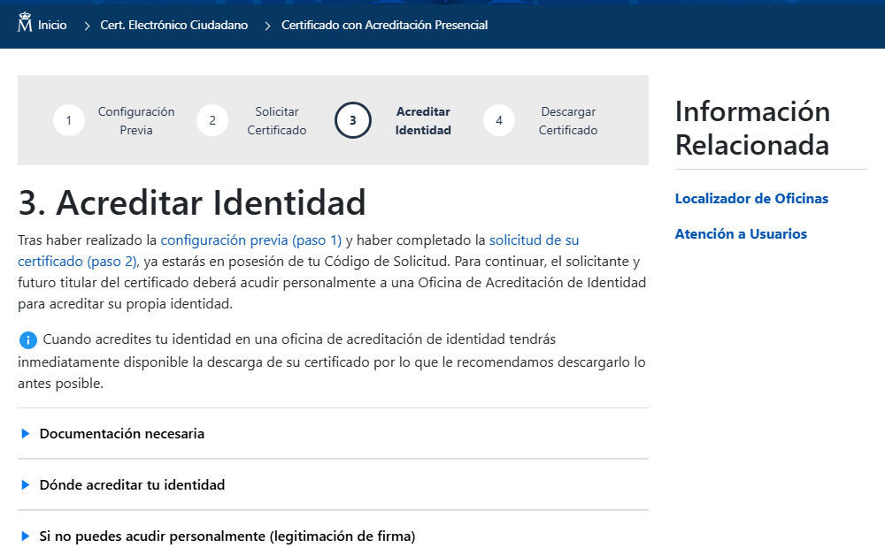

Paso 3: acreditar tu identidad
Compararás las dos formas de acreditar tu identidad ante la FNMT: presencial y por vídeo identificación online.
Paso 3: acreditar tu identidad
Por qué es necesario este paso
Hasta ahora solo has rellenado un formulario: cualquiera podría escribir tu nombre y tu DNI. Este paso es el que comprueba de verdad que eres tú quien está detrás de la solicitud, y es lo que da al certificado su validez legal.

Así es la página del paso 3 en la Sede Electrónica, con enlaces a la documentación necesaria y a las oficinas disponibles.
Captura real de sede.fnmt.gob.es (23/09/2026). El aspecto de la web puede cambiar con el tiempo.
| 🏢 Presencial | 📹 Vídeo identificación online | |
|---|---|---|
| Dónde | Oficina de Acreditación de Identidad (Delegaciones de Hacienda, Seguridad Social, muchos ayuntamientos…) | Desde casa, con tu propio ordenador o móvil |
| Cita previa | Necesaria en la mayoría de oficinas | No aplica (se hace en el momento) |
| Qué necesitas llevar | DNI/NIE en vigor y el Código de Solicitud | DNI/NIE en vigor, cámara y buena conexión |
| Quién te atiende | Un funcionario, en persona | Un proceso guiado de vídeo identificación |
Opción 1: acreditación presencial
- Localiza una Oficina de Acreditación de Identidad cercana (la propia sede de la FNMT tiene un localizador de oficinas). Suelen ser oficinas de la Agencia Tributaria, la Seguridad Social o de tu ayuntamiento.
- Pide cita previa si la oficina la requiere (muchas la piden).
- Acude con tu DNI o NIE en vigor y el Código de Solicitud que recibiste por correo.
- El funcionario comprueba tu identidad y confirma la acreditación. No tienes que hacer nada más en ese momento.
Opción 2: vídeo identificación online
Es una alternativa pensada para no tener que desplazarte. Se realiza siguiendo un proceso guiado en el que muestras tu documento de identidad y tu rostro a la cámara, siguiendo instrucciones. Este es el vídeo oficial de la FNMT que explica el proceso:
Cómo obtener tu certificado de Ciudadano con vídeo identificación · canal oficial CERES FNMT en YouTube
Vídeo publicado por el canal oficial de la FNMT-CERES, la entidad que emite el certificado.
Después de acreditarte
No hace falta hacer nada más en ese momento: la acreditación queda registrada y, pasado un rato (recuerda: aproximadamente una hora), ya podrás pasar al paso 4 para descargar tu certificado.
¿Y si no puedes ir en persona ni hacer la vídeo identificación?
La Sede Electrónica contempla una tercera vía, menos habitual: una tercera persona puede acreditarte en tu nombre, pero antes tendrás que legitimar tu firma ante notario en el contrato de expedición. Es un trámite adicional (y con coste notarial), así que solo compensa si de verdad no puedes acudir tú mismo/a ni hacer la vídeo identificación.
🧩 El sentido de este paso
¿Para qué sirve acreditar tu identidad ante la FNMT?
🧩 Qué llevar a la oficina
Vas a acreditarte de forma presencial. ¿Qué es imprescindible llevar?